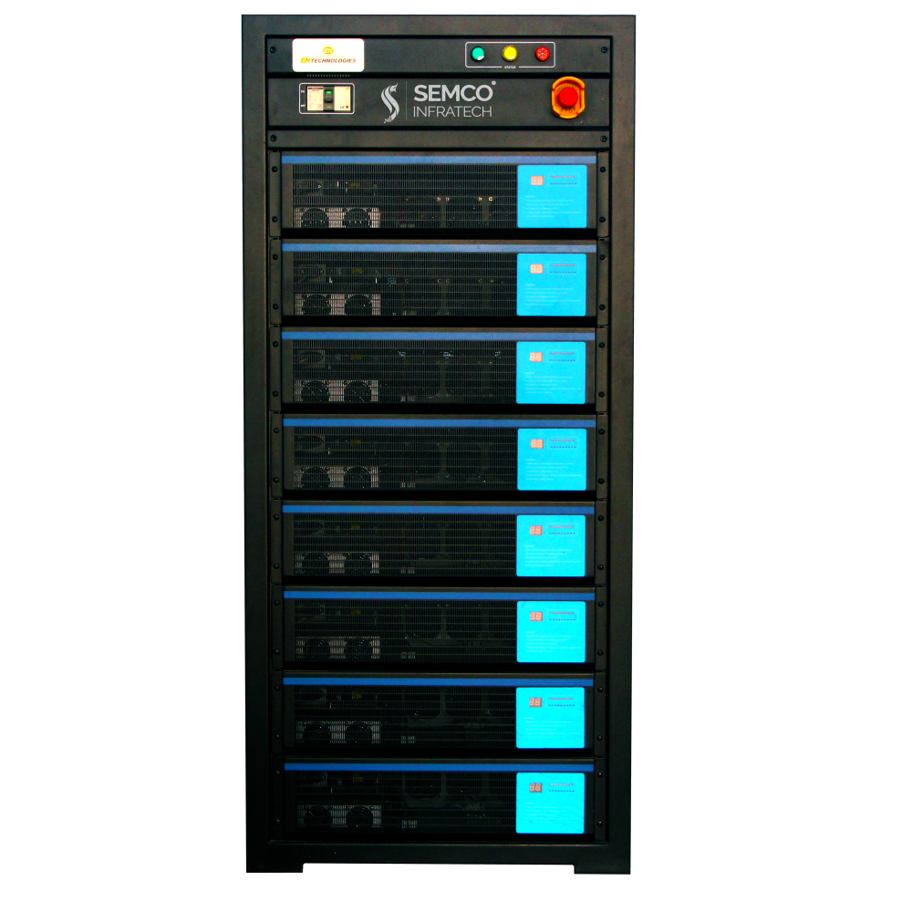
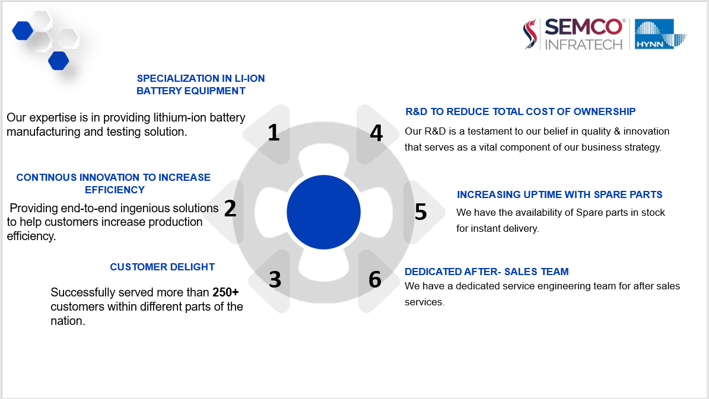
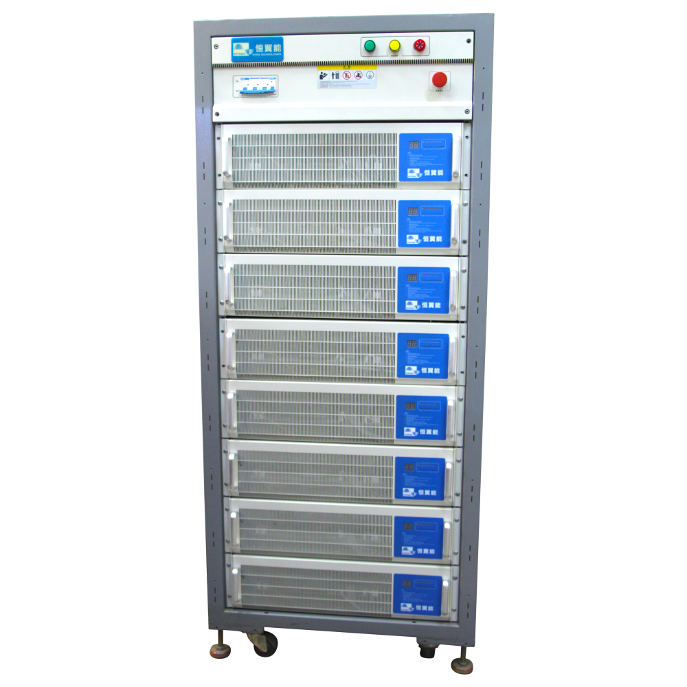
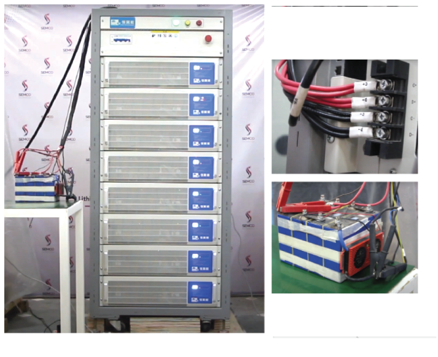

Introduction
A charge and discharge cabinet, also known as a battery test cabinet, is an equipment used for testing and evaluating the performance of batteries. It provides controlled conditions for charging and discharging batteries to simulate real-world usage scenarios and measure their capacity, efficiency, and other important parameters.
The charge and discharge cabinet is required for several reasons. Firstly, it allows for performance testing of batteries, enabling the assessment of characteristics such as capacity, voltage profiles, and cycle life. Secondly, it ensures quality assurance by subjecting batteries to rigorous testing before they are released to the market. Thirdly, it supports research and development efforts in battery technology by providing a controlled environment for experimentation and data collection. Finally, it facilitates battery maintenance by allowing controlled cycling to condition batteries and identify any capacity loss or performance degradation.
To use a charge and discharge cabinet, one needs to prepare the equipment by connecting it to a power source and familiarizing oneself with its controls and safety features. The battery to be tested is installed in the cabinet, and parameters such as charging and discharging current, voltage limits, and time durations are set. The test is initiated through the cabinet's controls, and data on parameters such as voltage and current is collected during the test. Safety precautions must be followed throughout the process, and once the test is complete, the collected data is analyzed to evaluate the battery's performance.

Now we will be addressing the main uses of the machine along with the parameters that effect the process.
A battery charge and discharge cabinet serves several important purposes in the evaluation and maintenance of batteries. Its main uses include performance testing, quality assurance, research and development, and battery maintenance.
During performance testing, the cabinet allows for the assessment of battery characteristics such as capacity, energy efficiency, voltage profiles, and cycle life. This helps ensure the batteries meet desired specifications and perform reliably in various applications.
In quality assurance, the cabinet helps manufacturers identify any defects or performance issues before batteries are released to the market, ensuring high-quality products.
For research and development purposes, the cabinet provides a controlled environment to experiment with different materials, designs, and charging algorithms, advancing battery technology and optimizing performance.
Battery maintenance is another key use of charge and discharge cabinets. By subjecting batteries to controlled charging and discharging cycles, these cabinets help identify capacity loss and performance degradation, allowing for proactive maintenance to extend battery lifespan.
The parameters that affect the charge and discharge process in a battery cabinet include charging and discharging current, voltage limits, time durations, cut-off thresholds, temperature control, and safety features. Proper control and adjustment of these parameters are crucial for accurate performance evaluation, safe testing conditions, and optimal charging and discharging processes tailored to specific battery types.
Principle of a Battery charge and discharge cabinet
The principles of a battery charge and discharge cabinet revolve around providing controlled charging and discharging conditions to assess battery performance accurately. The cabinet operates based on the fundamental principles of electrical energy conversion and management.
During charging, the cabinet regulates the flow of current into the battery, ensuring that the charging process adheres to specific parameters such as charging current, voltage limits, and cut-off thresholds. This prevents overcharging, which can lead to battery damage, while allowing the battery to reach its desired capacity.
During discharging, the cabinet controls the flow of current from the battery, mimicking real-world usage scenarios. It monitors parameters such as voltage, current, and capacity to assess the battery's performance and determine its efficiency and discharge characteristics.
The cabinet's design incorporates safety features to protect against overcurrent, overvoltage, and short circuits, ensuring safe operation during the charge and discharge process. Temperature control mechanisms may also be included to maintain optimal temperature conditions for accurate performance measurements and to prevent extreme temperature effects on battery behavior.
The principles of a battery charge and discharge cabinet ultimately aim to provide a controlled and reliable environment for testing batteries. By adhering to specific parameters and maintaining safety measures, the cabinet enables accurate assessment of battery performance, quality assurance, research and development, and effective battery maintenance.
After understanding about the machine, you might be thinking what are its benefit then below information will help you,
A battery charge and discharge cabinet offers several benefits in battery testing and evaluation. Firstly, it provides controlled conditions for charging and discharging batteries, allowing for accurate measurement of performance parameters such as capacity, efficiency, and voltage profiles. This helps in assessing battery quality, identifying any defects or issues, and ensuring reliable operation in various applications.
Secondly, a charge and discharge cabinet enables quality assurance by subjecting batteries to rigorous testing before they are released to the market. It helps manufacturers identify any potential performance issues or weaknesses, ensuring that only high-quality batteries reach the customers.
Thirdly, the cabinet supports research and development efforts in battery technology by providing a controlled environment for testing different materials, designs, and charging algorithms. This enables researchers and engineers to optimize battery performance, explore new technologies, and drive advancements in the field.
Lastly, a charge and discharge cabinet facilitates battery maintenance by allowing controlled cycling to condition batteries and assess their capacity loss or performance degradation. This helps in proactive maintenance measures to extend battery lifespan and ensure optimal performance over time.
Overall, the use of a battery charge and discharge cabinet brings benefits such as accurate performance evaluation, quality assurance, research and development opportunities, and efficient battery maintenance, leading to improved battery performance, reliability, and longevity.
Semco and Hynn Strategic partnership

The strategic partnership between Semco Infratech and Hynn Group is a collaboration that brings together their respective expertise in the energy sectors. Semco Infratech is a leading automated lithium-ion battery testing & assembly equipment providing company.
Through this partnership, Semco Infratech is the worldwide distributer of the Hynn products and Partnership aim to jointly develop and implement sustainable energy infrastructure projects. By combining their knowledge, resources, and capabilities, they are leveraging each other's strengths to drive innovation, enhance project efficiency, and contribute to the growth of the green hydrogen industry. This collaboration opens up opportunities to create sustainable energy solutions and support the transition towards a low-carbon future.
Hynn Battery Charge and Discharge Cabinet

The Hynn battery charge and discharge cabinet is a versatile testing equipment designed for the evaluation and analysis of batteries. It is available in a range of models with varying voltage and current capacities, such as the SI BCD with voltage capability up to -200V and current capability up to 200A.
This cabinet offers a range of amazing features that make it a valuable tool for battery testing. It enables life cycle testing, which allows for the assessment of battery performance over multiple charge and discharge cycles, providing insights into durability and longevity. The cabinet also facilitates testing of charging and discharging characteristics, helping to determine the efficiency and behavior of the battery during different operational scenarios.
Moreover, the Hynn battery charge and discharge cabinet enables testing of charging and discharging efficiency, providing valuable information about the energy conversion efficiency of the battery system. It also allows for endurance testing, evaluating the battery's ability to withstand overcharging and overdischarging conditions, which is crucial for ensuring the safety and reliability of the battery.
Additionally, the cabinet incorporates DC internal resistance testing, which helps assess the internal resistance of the battery, a key parameter that affects its performance and efficiency.
With its comprehensive features and capabilities, the Hynn battery charge and discharge cabinet provides researchers, manufacturers, and engineers with a powerful tool for accurately evaluating battery performance, optimizing energy systems, and driving advancements in the field of energy storage.
How to use Hynn battery charge and discharge Cabinet

Using a battery charge and discharge cabinet involves the following steps. First, ensure the cabinet is properly connected to a power source and all safety measures are in place. Second, install the battery to be tested in the cabinet, making sure the connections are secure. Third, set the desired parameters such as charging or discharging current, voltage limits, and time durations. Fourth, initiate the test through the cabinet's controls and monitor the process, ensuring it adheres to the specified parameters. Finally, collect and analyze the data on voltage, current, and capacity to evaluate the battery's performance. Safety precautions must be followed throughout the process to ensure a safe and accurate testing procedure.
How A battery charge and discharge cabinet works
A battery charge and discharge cabinet works by providing controlled conditions for charging and discharging batteries. It regulates the flow of current into and out of the battery, maintaining specific parameters such as voltage limits, current levels, and time durations. During charging, the cabinet controls the charging current and voltage to prevent overcharging, ensuring the battery reaches its desired capacity. During discharging, the cabinet regulates the flow of current from the battery, mimicking real-world usage scenarios. The cabinet also incorporates safety features to protect against overcurrent, overvoltage, and short circuits. By maintaining precise control over the charging and discharging processes, the cabinet allows for accurate evaluation of battery performance, testing efficiency, and identification of any issues or defects.
Got the solution to your battery worries then what are you waiting for book a live demo and operate your battery plant without any hassles and tensions. If you liked our newsletter then do not forget to share and comment and stay tuned for our next Newsletter on “Semco Battery Comprehensive Tester”. Till then “Happy Batteries”.